Mysterious Organism
Starting from a hypothetical situation of a discovery of a mysterious organism at the bottom of the ocean near hydrothermal vents, this software creatse objects that simulate the DNA of P. aequor for the research team to study.
The hypothetical context
I'm part of a research team that has found a new organism, Pila aequor (P. aequor), and finds that it is only comprised of 15 DNA bases. The small DNA samples and frequency at which it mutates due to the hydrothermal vents make P. aequor an interesting specimen to study. However, P. aequor cannot survive above sea level and locating P. aequor in the deep sea is difficult and expensive.
The code
DNA is comprised of four bases (Adenine, Thymine, Cytosine, and Guanine). When returnRandBase() is
called, it will randomly select a base and return the base ('A','T','C', or 'G'). There are two helper functions:
returnRandBase() and mockUpStrand(). mockUpStrand() is used to generate an
array containing 15 bases to represent a single DNA strand with 15 bases.
I created a factory function pAequorFactory() that has two parameters:
- The first parameter is a number (no two organisms should have the same number).
- The second parameter is an array of 15 DNA bases.
pAequorFactory()return an object that contains the properties specimenNum and dna that correspond to the parameters provided.
The the program simulate P. aequor‘s high rate of mutation (change in its DNA). To do that, in
pAequorFactory()‘s returned object, I added the method .mutate().
.mutate() is responsible for randomly selecting a base in the object’s dna property and changing the
current base to a different base. Then .mutate() returns the object’s dna.
Then I added a new method (.compareDNA()) to the returned object of the factory function.
.compareDNA() has one parameter, another pAequor object.
The behavior of .compareDNA() is to compare the current pAequor‘s .dna with the passed in pAequor‘s
.dna and compute how many bases are identical and in the same locations. .compareDNA() does not
return anything, but prints a message that states the percentage of DNA the two objects have in common.
.specimenNum identifies which pAequor objects are being compared.
For example:
ex1 = ['A', 'C', 'T', 'G']
ex2 = ['C', 'A', 'T', 'T']
ex1 and ex2 only have the 3rd element in common ('T') and therefore, have 25% (1/4) of their DNA in common.
I added another method .willLikelySurvive().
.willLikelySurvive() returns true if the object’s .dna array contains at least 60% 'C' or 'G' bases.
Otherwise, .willLikelySurvive() returns false.
Finaly the program create 30 instances of pAequor that can survive in their natural environment and stores these instances in an array for the team to study later.
See the code at my GitHub